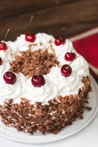

Black Forest Cake

A moist chocolate cake with chunks of cherry and freshly made whipped cream. You can't go wrong with this cake.
Ingrdients
Chocolate Cake
1¾ cups (250 g/8.8 oz.) all-purpose flour, sifted
⅔ cup (65 g/2.3 oz.) natural unsweetened cocoa powder, sifted
2 cups (400 g/14 oz.) granulated sugar
½ cup (120 ml) neutral oil, such as canola or vegetable oil
2 teaspoons pure vanilla extract
1 cup (240 ml) buttermilk
Cherries and Cherry Syrup
1 cup drained, canned cherries
¼ cup Kirsch, or another cherry liqueur
cherry juice from canned cherries (drain cherries and reserve the juice)
Whipped Cream Frosting
½ cup powdered sugar, sifted
Option Decorations
200 g/7 oz. chocolate shavings
Steps
To make the chocolate cake: Preheat oven to 350°F/180°C. Generously butter two 8-inch cake pans that are at least 2-inches high, and dust with cocoa powder, tapping the ramekins slightly to remove any excess.
In a large bowl, place flour, cocoa powder, baking powder, baking soda, salt, and sugar. Mix until combined. Set aside.
In a medium bowl, mix together eggs, oil, vanilla, buttermilk, and water (pour the water slowly so it won’t cook the eggs). Whisk until smooth. Add egg mixture into flour mixture and mix until smooth. Don’t overbeat – batter will be lumpy at first, but mix gently and eventually stir with a whisk just until smooth. The batter will be thin and liquid. That's ok.
Scrape batter into prepared pans. Bake cakes for 30-35 minutes (depending on your oven - this might take longer), or until a skewer inserted into the center comes out clean or with just a few moist crumbs. Allow to cool for 10 minutes in the pan before unmolding, then let cakes cool completely on a wire rack. I recommend wrapping the cakes in plastic wrap and refrigerate or freeze them for several hours before cutting them. Cut each cake layer in half horizontally.
To make the syrup: place drained cherries in a medium bowl, and add to the bowl ¼ cup Kirsch and ½ cup cherry juice from can. Leave to soak at room temperature for 30 minutes or more, then drain cherries in a sieve over a bowl, keeping both the cherries and syrup. Add more cherry juice to the syrup to get 3/4 cup syrup (you won't need the rest of the juice, discard it or save for another use). This will be the soaking syrup for the cake layers.
To make the whipped cream: Using a stand mixer or hand mixer with a whisk attachment, beat heavy cream and powdered sugar until stiff peaks form. Read more about making perfect whipped cream here.
Assembly: Place one cake layer on a cake stand or plate and brush with 1/3 of the cherry syrup. Cover top with a thick layer of whipped cream frosting (about 1 cup) and top with 1/3 of the cherries. Repeat twice more with remaining layers and top with the last cake layer (there’s no need to soak the top layer with syrup). Frost the top and sides of the cake with whipped cream. If you want, reserve some of the whipped cream, about 1½ cups, for decorating the top. Use a pastry bag with a large flower tip, and pipe rounds around the top. Top with whole cherries. Cover the sides and top with chocolate shavings, if desired. Store cake in the fridge, covered, for up to 4 days.